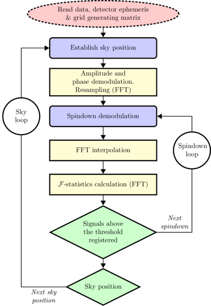

F-statistic candidate signal search
Production serial code for a network of detectors is available at here. OpenMP version is at this location. To get the whole pipeline, run git clone https://github.com/mbejger/polgraw-allsky.git.
Algorithm flowchart

Prerequisites
The code is written in standard C. GNU Scientific Library (GSL) and the FFTW library (version 3.0 or later) are needed to run the code. GNU struct dirent objects are used to read the directories.
Optionally, SLEEF or YEPPP!, libraries for high-performance computing that are optimized for speed are used to evaluate the trigonometric functions in the search code. These libraries are ported with the source code and are located in src/lib. The choice which of these libraries to use has to be made at compilation time by modifying the Makefile.
Compilation
Run make gwsearch-cpu or make in search/network/src-cpu, resulting binary is called gwsearch-cpu (this is the default C version not-optimized with openMP; for the openMP version see the search/network/src-openmp directory). Modify the Makefile to fit your system. By default the YEPPP! library is selected.
Full list of switches
For the full list of options, type
% ./gwsearch-cpu --help
| Switch | Description |
|---|---|
| -data | Data directory (default is .) |
| -output | Output directory (default is ./candidates) |
| -ident | Frame number |
| -band | Band number |
| -label | Custom label for the input and output files |
| -range | Use file with grid range or pulsar position |
| -getrange | Write grid ranges & save fft wisdom & exit (ignore -r) |
| -cwd | Change to directory <dir> |
| -threshold | Threshold for the \mathcal{F}-statistic (default is 20) |
| -hemisphere | Hemisphere (default is 0 - does both) |
| -fpo | Reference band frequency fpo value |
| -dt | Data sampling time dt (default value: 0.5) |
| -usedet | Use only detectors from string (default is use all available) |
| -addsig | Add signal with parameters from <file> |
| -narrowdown | Narrow-down the frequency band (range [0, 0.5] +- around center) |
Also:
| --whitenoise | White Gaussian noise assumed |
| --nospindown | Spindowns neglected |
| --nocheckpoint | State file will not be created (no checkpointing) |
| --help | This help |
Example
Minimal call to gwsearch-cpu is as follows (code compiled with the GNUSINCOS option):
% ./gwsearch-cpu -data ../../../testdata/2d_0.25 -dt 2 -output . -ident 001 -band 1234 -nod 2
where
datadirectory is the base directory of input data files,- Sampling time
dtis 2 s, outputdirectory is a directory to write the output (e.g., in current directory, . )identis the number of time frame to be analyzed (001),nodnumber of days is 2,bandis the number of the frequency band (see the input data structure for details).
Network of detectors
Test data frames nnn=001-008 with pure Gaussian noise 2-day time segments with sampling time equal to 2s (xdatc_nnn_1234.bin) for two LIGO detectors H1 and L1 are available here.
A sample call is
% LD_LIBRARY_PATH=lib/yeppp-1.0.0/binaries/linux/x86_64 ./gwsearch-cpu \
-data ../../../testdata/2d_0.25/ \
-ident 001 \
-band 1234 \
-dt 2 \
-nod 2 \
-addsig sig1 \
-output . \
-threshold 14.5 \
--nocheckpoint
where the LD_LIBRARY_PATH points to the location of the YEPPP! library.
The program will proceed assuming that
- the data directory for frame
001is located at../../../testdata/2d_0.25/001and contain subdirectories with input data for H1, L1 and/or V1 detectors (all available detectors are used by default; to select specific detectors, use-usedetoption), - the grid of parameters files is expected to be in
../../../testdata/2d_0.25/001, bandequals to 1234,- the sampling time
dtequals 2 s, - number of days
nodin 2, - the
-addsigoption is used to add a software injection to pure noise Gaussian data. The signal's parameters are randomly generated using thesigencode (for more details see the minimal example). - the threshold for the \mathcal{F}-statistic is set to be 14.5,
-outputis the current directory,--nocheckpointdisables the checkpointing (writing the last visited position on the grid to thestatefile),
Output files
Binary output files, containing trigger candidate events above an arbitrary threshold (option -threshold for the \mathcal{F}-statistic, default 20), are written to the output_dir directory. There are two output files for every input data sequence: triggers_nnn_bbbb_1.bin and
triggers_nnn_bbbb_2.bin, where 1 and 2 correspond to the northern and southern ecliptic hemisphere. Each trigger (candidate) event occupies 40 consecutive bytes (5 double numbers), with the following meaning:
Record no. |
--------------------- | ----------------------------
1 | frequency [radians, between 0 and \pi] above fpo
2 | spindown [\mathrm{Hz/s}]
3 | declination [radians, between \pi/2 and -\pi/2]
4 | right ascension [radians, between 0 and 2\pi]
5 | signal-to-noise ratio
For the example above, the first 10 triggers from triggers_001_1234_2.bin are
3.05617018e+00 -3.42376198e-08 -7.68007347e-02 2.59248668e+00 5.06667333e+00
1.18243015e+00 -3.20762991e-08 -7.68007347e-02 2.59248668e+00 5.05528873e+00
1.08103361e-01 -2.77536578e-08 -7.68007347e-02 2.59248668e+00 5.07085254e+00
1.90022435e+00 -2.77536578e-08 -7.68007347e-02 2.59248668e+00 5.15191593e+00
1.90000217e+00 -2.55923371e-08 -7.68007347e-02 2.59248668e+00 5.42638039e+00
2.09224664e+00 -2.34310165e-08 -7.68007347e-02 2.59248668e+00 5.20879551e+00
2.38731576e+00 -2.12696958e-08 -7.68007347e-02 2.59248668e+00 5.31983396e+00
3.00543165e+00 -1.91083751e-08 -7.68007347e-02 2.59248668e+00 5.29454616e+00
7.49333983e-01 -1.26244131e-08 -7.68007347e-02 2.59248668e+00 5.08724856e+00
2.08710778e-01 3.43510887e-10 -7.68007347e-02 2.59248668e+00 5.17537018e+00
Auxiliary output files
-
wisdom-hostname.dat- performance-testing file created by theFFTW. Thehostnamevariable is determined by a call togethostname(), -
state_nnn_bbbb.dat- checkpointing file containing the last grid point visited. The search can be safely restarted, calculations will continue from the last grid position saved to this file. After successful termination, checkpoint file is left empty.